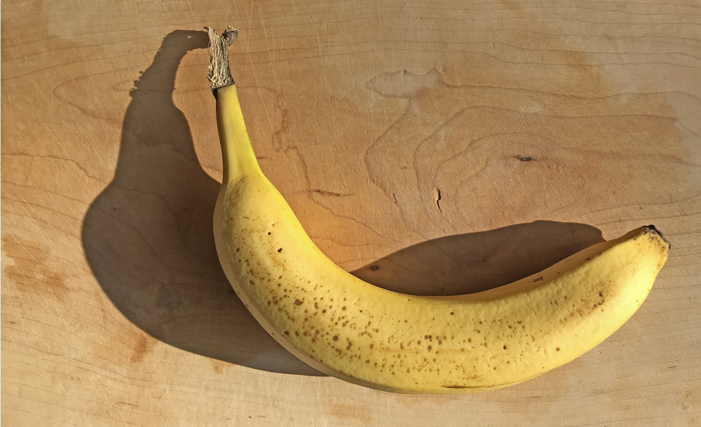
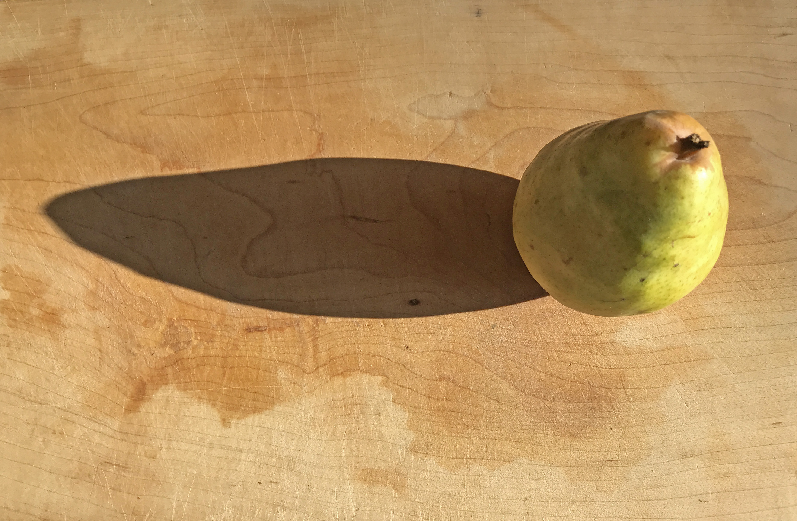
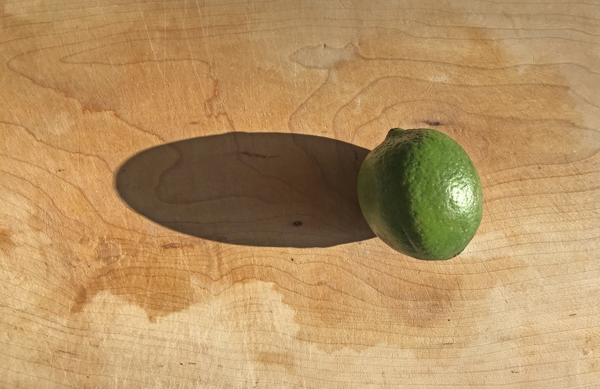

No food is both sweet and poisonous—some thoughts about fruit.

For millions of people, the banana is the go-to snack.

The under-appreciated pear, ubiquitous and humble—could there be a better partner for desserts?

Limes—an essential part of so many great drinks.
Consider me As one who loved poetry And persimmons.
- Masaoaka Shiki
Currently, I have the following fruit in my home.
- Pears. Green/yellow soft, more wet then juicy, and becoming fragrant
- Bananas. deep yellow with brown specials
- Limes. green, darkly-colored with the promise of tart acidity
- Blueberries
luxuries in a time of necessities. Anyone who has spent time camping—not to be confused with 'tenting'—will have a perspective on the relationship between luxuries and necessities: The incomparable experience of the taste sugar after living on the basics for a length of time—Aah, is anything better?
Our personal experience of fruit is multiplied by those we talk with. Conversation mediates all experience. Our impressions do they come from ourselves. Bourne from experience is also the fruit of our expectations.